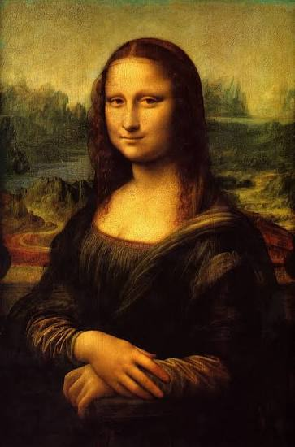

Мона Лиза (Джоконда)

История создания
«Мона Лиза» была написана Леонардо да Винчи между 1503 и 1506 годами во Флоренции. Картина представляет собой портрет Лизы Герардини, супруги флорентийского торговца шелком Франческо дель Джокондо.
Художественные особенности
- Техника сфумато — мягкая дымчатая светотень
- Композиция в виде пирамиды
- Загадочная улыбка и прямой взгляд
- Пейзаж на фоне с эффектом атмосферной перспективы
- Отсутствие четких контуров
- Естественность позы и жестов
Технические детали
| Художник | Леонардо да Винчи |
| Годы создания | 1503-1506 |
| Размеры | 77 × 53 см |
| Техника | Масло на тополевой доске |
| Стиль | Высокое Возрождение |
| Место хранения | Лувр, Париж, Франция |
История владения
Картина находилась в коллекции французского короля Франциска I, затем в Версале, а после Французской революции была перемещена в Лувр. В 1911 году была похищена итальянским патриотом Винченцо Перуджей, который хотел вернуть её на родину Леонардо. Картина была возвращена через 2 года.
Культурное влияние
«Мона Лиза» стала иконой поп-культуры, объектом многочисленных пародий и интерпретаций. Её загадочная улыбка породила множество теорий и исследований. Картина считается эталоном портретной живописи и одним из величайших произведений искусства в истории.
Интересные факты
- В 1956 году картина была повреждена кислотой
- Защищена пуленепробиваемым стеклом
- Ежегодно её видят около 8 миллионов посетителей
- Никогда не покидает стен Лувра